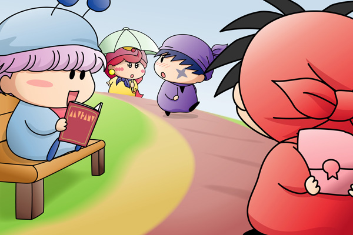

２００６年７月、掲示板にて行いました企画第６弾『あなたが見てみたい妖精の恋は？』の結果をまとめましたので本記事にて報告します。
■ルール
恋を見てみたい妖精を５位、４位、３位、２位、１位の順に５人選びます。皆さんからの投票により各キャラに以下のpointが加算され、最もpointの高い妖精が恋に関して最も注目度の高い妖精ということになります。
| １位 … 10point |
| ２位 … 8point |
| ３位 … 6point |
| ４位 … 4point |
| ５位 … 2point |
■結果発表
レインボーさん、koさん、ピピッチさん、ひかりさん、ぴろこさん、ハムトラ♪さん、アコモさん、ハルさん、しろうさぎさん、蒼ちゃん、たかるんさん、multalさん、そして私からの投票により以下の順位となりました♪
| １位 | 56point | ムルモ |
| ２位 | 46point | サスケ |
| ３位 | 40point | アクミ |
| ヤシチ | ||
| ５位 | 36point | アロマ |
| ６位 | 18point | キンタ |
| ハンゾー | ||
| ヤマネ | ||
| ９位 | 16point | チック |
| ムーン | ||
| １１位 | 12point | アンリ |
| デンタ | ||
| ミルモ | ||
| マンボ | ||
| １５位 | 10point | ペータ |
| １６位 | 8point | センリ |
| １７位 | 6point | オトメ |
| ポーロ | ||
| １９位 | 4point | イチロー |
| パンタ |
１位をゲットしたのは当サイトの店長を務めるムルモ！パピィとの恋は決着がつかぬままですが、山あり谷ありの二人の恋がどのように発展していくのかを今でも見てみたいですよね。２位にはミルモ史上最大の大失恋を味わったサスケくん。ヤマネとの恋はかないそうもありませんが、彼を幸せにしてくれる妖精が誰なのか？妄想は膨らむばかりです。３位はアクミとヤシチ。アクミは恋をすると性格変わりそう。それともツンデレのまま！？ヤシチはいつの日かヤマネの愛にこたえてくれそうなのですが、それはいつの日になることやら。
今回失敗だったのが、ムルモ＆パピィのようにカップルがほぼ成立している妖精の考慮が足りていませんでした。ヤシチとヤマネを足したら単独３位をゲットしていたかもしれませんね。次回の企画ではもう少しルールを考えたいと思います。
それでは今回も記念の絵を載せますね。
ムルモ＆ヤシチ＆アクミ＆サスケ(1)

ものすごくごちゃごちゃして違和感のある絵になってしまいました(^◇^;)。
それでは解説です。まずは新しい恋をするためにおしとやかな女性を目指すよう心を入れ替えたアクミ。『めちゃモテ委員長』のように、がさつな性格から可憐な少女に生まれ変わることは果たして出来るのか！？
そして清楚な雰囲気をかもし出すアクミに思わず反応するサスケ。ヤマネに一目惚れしたように、彼は何かと影響を受けやすい性格だと個人的に思っています。
何かのきっかけでヤマネにプレゼントをもらってしまったヤシチはプレゼントのお返しを買ったのですが、前方のサスケを見てあわててプレゼントを隠してしまいます。弟子たちの前では頼れる兄貴でなきゃというプライドがまたもや彼の心を閉ざしてしまう！？
最後にムルモは幼馴染みのパピィとの写真がたくさん入ったアルバムを眺めて楽しんでいます。他の３人とは違ってまさに一人だけ別世界。これからもパピィと一緒にいたい！という気持ちがどんどん高まっているはず。
本当は街中のシーンにしたかったのですが、描けば描くほど絵がどんどん複雑になり妖精が目立たなくなってしまったため、思い切って単純な背景に変えました。もっともっと修行しなきゃ・・・。
ここからは皆さんと私の投票カキコを再掲します。
★こやまる★
５位：アクミ
アクミのことを気にかけてくれる＆アクミより強い男性にアクミは恋するのかなと個人的に思っています。そしてミルモがその条件に一致すると密かに思っている私…。もちろんミルモはリルムと結婚しているからアクミの想いを冷たく拒否しますが、それでもアクミの思いは熱くなるばかり・・・というドロドロの関係を見てみたい！（おいおい）
４位：サスケ
今も彼の頭の中にはヤマネのことでいっぱいなのでしょうね。ヤマネも不器用だから、サスケを傷つけないようにと思って、サスケには曖昧な態度をとり続けてそうな気がします。…と思いきや、影響を受けやすそうな彼のことだから、たとえばカメリのような新たな恋の相手を見つけているのかも。とにかく彼には幸せを掴んでもらいたいなと思っています(^^;。
３位：マンボ
アニメや原作では全然色気の無かったマンボ…。３１話「オラ、キンタだす！」では誰よりも先にキンタに相撲を挑んだ勇敢さを持っていることより、マンボのその一面を好きになってくれそうな女の子もいるのかも。後で女の子が勘違いだったと分かりがっかりしても、マンボは鼻の下を伸ばしながらその女の子に尽くしまくるという”いい男”を演じそうな気がします(笑)。
２位：アンリ
田舎者で勘違いが多そう…３位に挙げたマンボを勘違いで(?)好きになってしまいそうな予感も(^^;。そうなるといつも一緒にいるセンリとのバランスがぎくしゃくしてしまうのですが、そんな場面でアンリがどのような行動を取るのかをすごく見てみたい！！ただ、１３４話「グルミ族の勇者キンタ！？」ではとてもしっかり者で頑固なアンリが描かれていたので、突然男性を振ってしまいそうな恐れも！？
１位：ヤシチ
とにかく恋に奥手なヤシチ。今も素っ気ない態度を取ってヤマネを泣かせているのかなぁ。アニメではヤマネの恋心にヤシチの心が動かされることはなかったけれど、何かの出来事によりヤシチが自分の思いに気がつくようなシーンを期待せずにはいられないですね。ただヤシチはオトメのようなかわいい女の子がタイプなので、ヤマネはもっともっと努力しないといけませんね。もしくは先に幸せを掴んだミルモがヤシチを説教したり…とか。
★レインボーさん★
５位：デンタ
デンタは第１１７話「クイズ・ワルモキッズをさがせ！」でツツジ先生に一目ぼれしてしまいましたよね。その後、ツツジ先生にどうアタックしているのか気になります。でもミルモに邪魔されてる可能性大ですね（笑）。
４位：アクミ
アクミは気性の荒い性格でも、恋愛には意外に積極的に思えてきます。好きな相手は以前は言うまでもなく、ダアクでしたよね。でもダアクの事は諦め、その後の好きな相手はいるかどうか不明ですが、もしかしたらミルモの事が好きなんじゃないかなぁ、って思います。ミルモの生意気だけど、強く優しいところに魅かれるんじゃ・・・と思います。後、ネズミの事も気になっているのでは、と思います。ごおるでん時代にいがみ合いながらもパートナーとして暴れまわっているうちに恋心が芽生えたのではないか・・・と思ったりしてます。
３位：チック
第８９話「妖精チックな時計～最終章～」でコヨミに告白するも、数秒でフラれたチック。長い間コヨミの事が好きだったので、そう簡単には諦めないと思います。しかしコヨミには超本命（コヨミ一方的）のクロロがいますよね。恐らくチックはクロロをライバル視して、宣告するんじゃないんでしょうかね。ただ不器用な性格のクロロにこの宣告が分かるかどうかは分かりませんけどね・・・。
２位：ムルモ
原作、アニメ共にパピィへの恋心は最後まで明かされませんでしたけど、ムルモのパピィへ対する思いはいつもの喧嘩友達（？）という視点だけではないと思います。第３２話「ムルモのライバル、パピィがいばる」や第６０話「ムルモはわたちのもの」でパピィが怒ったタコやアクミに襲われそうになった時に助けようとしていましたし・・・。ムルモもパピィの事が好きなんじゃないかなぁとおもう今日この頃です・・・。
１位：アロマ
栄えある第１位は幼馴染で気になる彼がいるというアロマちゃんです。アロマの幼馴染って誰なのかが凄く気になります。でも結局明かされないだけでなく、そのままアロマの出番も終わり・・・。想像するのが難しいですが、きっと優しくて思いやりがある妖精だと思います。大切なのはお金や地位などではなく愛ですから・・・。アロマはその彼は今どうなっているのか非常に気になります。
★koさん★
５位 アロマ
皆さんもお分かりのように、幼馴染の存在が気になりますね。アロマなら幼馴染が誰であろうとやっていけそうですね。
４位 ミルモ
恋は既に叶ってますが、是非続きを見てみたいものです。２人の恋は叶ってるようで叶ってないようなもの（？）ですからね。ミルモも少しは恋ということを意識しはじめてきているのか いや、やっぱり相変わらずなのかな…
３位 サスケ
今もヤマネに恋してるのかな… それともヤマネはあくまで友達と割り切って、ムルモ屋公認カップルのカメリの登場なるかも＾＾と言ってもカメリは鈍感なので、のんびりと恋を進めていきそうです。でもしばらくは、恋を意識しない展開が続きそうですね＾＾；
２位 アクミ
こやまるさんとレインボーさんが言うようにミルモとの関係もなかなか面白そう(ぉぃ)ですが、自分はネズミとの関係を見てみたいです。アクミは積極的にアタックしてきそうですね。また、ごおるでんのパートナー時代に養った絆で、気もあいそうです
１位 チック
コヨミとの恋愛を見てみたいです。相変わらずコヨミはクロロのことしか見てなそうですが＾＾；粘り強くアタックしていって欲しいですね。
★ピピッチさん★
５位 アクミ
『ミルモと結構気があいそうだなーと思っているからです♪ミルモにはリルムがいるので、結ばれたりはしませんでしたが、個人的に見てみたかったですねー。』
４位 ハンゾー
『ハンゾーの恋を見てみたかったですー。サスケもヤシチも恋の巻きがあるのだから、ハンゾーの恋の物語も是非見てみたかったですね。』
３位 ヤシチ
『ミルモとリルムということですが、ヤシチの相手は結局誰になるのかとても気になりますよ。ヤマネがヤシチに思いを寄せていますが、二人はカップルになるのかなぁ・・。オトメに一度恋をしたヤシチですが、オトメとカップルになるってことはないと思いますから（笑）』
２位 サスケ
『やっぱりサスケファンとしては気になりました。ヤマネがヤシチに恋をしているぶん、どうなるのか知りたかったですねー。最後までサスケの恋を応援したかったですー。』
１位 ムルモ
『個人的には、もうムルモとパピィってことでイメージづいてしまっているのでやっぱり最後にどうなるか放送してほしかったですねー。見れなくてとても残念です・・。ムルモに対してのパピィの乙女心は何度かアニメのほうでも見てきましたが、ムルモの恋意識のほうを見てみたかったです。』
★ひかりさん★
五位 キンタ
リルムに猛アタックも失敗・・・。果たしてキンタよりも強い女の子なんていないのでは？するとキンタはずっと独り身・・・・。きになる～！！
四位 イチロー
ユリンにこっぴどい目にあってから恋愛に奥手気味だった彼！？本当に立ち直る事はできたのだろうか！私的にはピカリｃとくっつくとしっかりもので尽くすタイプの彼女にイチローは癒される・・・にかも＾＾
三位 オトメ
やっくんのことを一途におってたオトメ・・・。しかしそろそろ新しい恋をするのでは！？ムーンかクロロにこんどは付きまとうんじゃないかと勝手に予想。二人とも必死でにげるはず＾＾それでもオトメはこりずに「性別なんてどうでにいいじゃないですかぁ～」とおっかけまわす・・・。あぁ～かわいそ・・・。
二位 ムルモ
なんだかんだいってムルモ、もしかしてもしかしなくてもパピィと婚約してませんよね！？二人の恋はカメリモード・・・。いつになったらしんてんするのやら・・・。破滅ってことはないとおもうんだけれども・・・・・。どうなるのやら・・ねぇ・・。
一位 デンタ
ツツジ先生にラブ・・・しかしガラ悪いんで幼稚園の先生としてはいやかも・・・。それでふられて歯科医院休診・・・。彼ならしそうだ。がんばれ！デンタ！
★ぴろこさん★
５位：ヤシチ
オトメとの恋は，予想外の方向へいきました（--;） 兄貴分で部下に優しく渋い（でもスケベでおっちょこちょいな）ヤシチ。ギャップがたまらない！とか言って恋をしてしまう妖精はけっこういると思います。ヤシチの優しさが良い方へ転ぶのか，はたまたドロドロになってしまうのか。。。ちょっと興味あります。
４位：ヤマネ
サスケをみても分かるとおり，ヤマネちゃんかわいい(>_<)/ かわいいけど颯爽としてかっこよく，色っぽさまで感じてしまいます。なぜに片思い？と思ってしまうくらいです。でも三角関係のような複雑な恋が似合ってしまいそう。。。そんな中でもどんどんかわいくなっていくヤマネちゃんをみたいです。
３位：ミルモ
キンタというライバルは出現しましたが，やはりリルムとの関係が落ち着いているミルモ。ミルモの恋というよりは，リルムとの間にかわいいこどもがたっくさんできて，ドタバタぎゃぁーというのを見てみたいです。リルムが相変わらず「もぉぉおおおー！」とか言いながら，ミルモを投げ飛ばしてる光景が目に浮かびます♪
２位：ムーン
１位以下をかなり迷ったのは，ムーンがいたから！です。クールな妖精ガイのムーン。漫画ではもてるのにいつもふられるという設定でした。彼の無表情（でも楽しいうれしい）＆プリティ（？...）スマイルを理解してくれる子はきっとどこかにいるはずです。ムーンのハッピーな恋をみてみたいです。
１位：ムルモ
やはりムルモの恋の行方はいつまでも見守りたいです。きっとパピィが素直な態度をとれれば，ものすごくらぶらぶカップルになるだろになぁと思いながら。。。ムルモはかわいいだけでなく，パピィにチュゥしてあげれるよな男の子らしさ，そっと雨から守ってあげれるやさしさもあります。おまけにみんなのアイドル人気者です！そりゃもてちゃいますよぉおー！o(>_<)o （と信じている。。。）ムルモに「ワン・アイ・ラブ！」（ｂｙ松竹しゃん）の強敵がたくさんあらわれてしまうドタバタわいわい楽しい恋を想像してしまいます。
★ハムトラ♪さん★
第五位：アロマちゃん
やはり気になるのは皆さんと同じく幼馴染の彼とその後の展開ですね。今でもお互いに仲良くお付き合いをしているのかとても気になるところです。
第四位：ヤシチくん
普段は恋に関して反応が鈍いヤシチくんですが、オトメさんの時に見せた熱い想いを、いつかまた発揮してほしいものです。でも今はオトメさんの時に受けた傷が深いと思うので、なかなか前へ踏み出せない状態なのでしょうけれど…。
第三位：アクミちゃん
普段はいつもそっけない態度を取っているアクミちゃんですが、恋に関しては人一倍に熱く燃えそうですね（ダアクの時のようにです）。でも現時点では好きな人はいないようですが、実は密かにミルモくんのことが好きなのだと私は思っています。時折ミルモくんが見せる勇気や優しさに心を打たれてしまった可能性がありそうですので…。
第二位：ムルモくん
出会った時からいつもパピィちゃんに攻撃を受けているので、なかなか想いが伝わらない感じがしますが、でもその想いは密かにですがきちんと伝わっている気がします。ですがそれでも今はまだライバル状態ですよね。…この先もまだまだ時間はかかるかもしれませんが、いつかはお互いに素直になり想いが伝わることを心より願っています。
第一位：サスケくん
残念ながらヤマネちゃんへのサスケくんの想いは届きませんでしたが、それでもヤマネちゃんに今でも想いを寄せていると思うので、その辛さは日に日に増していきそうですよね…。どうかその辛さを頑張って乗り越え、そして新たな恋を見つけて欲しいと思っています。きっとサスケくんなら、持ち前の明るさでどんなことでも難なくこなすことが出来るのでしょうから…。
★アコモさん★
５位：アロマちゃん
色んな意味で後の事が気になるアロマちゃん、次はどんな恋に落ちてしまうのか気になります。
４位：アクミちゃん
強気なアクミちゃんですが、好きな人に一途な所はやはり女の子ですね。ミルモくんとの相性が良さそうですが、ネズミとの相性もまんざらではない様子ですし今後が見てみたい１人です。
３位：ハンゾーくん
サスケくんはヤマネちゃんへの片想いで話題になりましたが、私的にはハンゾーくんの恋をみてみたいですね。本編では恋のお話が無かったハンゾーくんですが、案外サスケくんよりも積極的だったりするかも…
２位：ヤシチくん
妖精忍者は皆さん奥手で意外と積極的、中でもヤシチくんは奥手中の奥手ですね。オトメの時も話が進みだすとと意外と積極的になっていたので、次も同じ展開に！？次回はオチの無い恋をして欲しいものですね。
１位：ペータくん
誰にでも優しいペータくんは、どんな妖精さんとの恋に落ちるのでしょうか…相手もきっと優しい女の子妖精のはず、ドーナツの輪のようにまあるいエンドレスな恋に落ちてほしいと願っていたりして…^^;
★ハルさん★
第５位 サスケ
ヤマネの気持ちを知り、自ら身を引いたサスケくん。常に自分より相手の事を考えてあげる彼の優しさに感動しました。そんな彼の魅力に気づいてくれる妖精はきっといると思うので、失恋に負けず、その気づいてくれた相手と新しい恋を育んでいってくれたらなと思います。（個人的にはパピィやカメリを希望します＾＾）
第４位 アンリ
４位はアンリです。アンリって恋するとどんな風になるんだろう・・。という好奇心から４位に入りました。相手はセンリのような年下なのか、それとも年上なのか。同じ年なのか。今のところ恋にあまり縁がない彼女ですが、いつかは彼女が恋するところを見てみたいですね＾＾でもそうなると、センリが急に自分に構ってくれなくなったアンリを見て焼きもちを焼いちゃうかも知れないですね。（そこも可愛いんですけど＾＾）
第３位 ポーロ
２位にしようかどうか、最後まで迷いましたが結局３位になりました。アニメでは全くといっていいほど出番がありませんでしたが、私の中ではアロマちゃんと既にカップル状態です＾＾もし本当にアロマちゃんと両思いになるのだったら、ケンカをしない仲良しカップルになってくれたらなぁと思います＾＾
第２位 センリ
私が一番大好きなポーロくんを抑えて堂々の２位に食い込んだのはなんとセンリくん！彼が恋する姿を色々想像してみたんですけど、可愛いんですよこれが！！きっとアンリみたいなお姉さんみたいな人に憧れるんでしょうね。（だとすると候補はリルムかな）失敗も色々あるかも知れないけど、最後には幸せになってほしいですね。
第１位 アロマ
やはり彼女のトップは揺ぎ無いです。幼馴染の彼（私の中では完全にポーロくんですけど＾＾）との恋に尽きますね。おっちょこちょいだけど心が優しく、思いやりのある彼女なら上手くやっていけそうです。
★しろうさぎさん★
５位 マンボ
好きな子ができたらなんとかかっこよく見せようとしてビケーにデートのやり方やファッションを聞いたりと必死になるんじゃないかと思います。それでもカッコ悪くなってしまうのがマンボらしいところでしょうか。
４位 ムーン
マンガでは彼女がいたらしいです。笑顔が怖いので振られましたが。もしアニメで実現したらどんな愛の言葉を語るのか、楽しみです。
３位 サスケ
大好きなアニキとヤマネとで三角関係になってしまって、結局自分が身を引いたんですよね。でも、ヤマネは兄のように頼れる人が好きだと思うんで、サスケもあきらめずに努力すればまだ芽はあると思います。
２位 アクミ
報われない恋ＮＯ．１。アクミがダアクを好きになったのはダアクの魔法の力のせいだったのか、それとも… どっちにしても悲しい恋の終わりになってしまったわけです。そんなアクミを元気付けられるのは、元恋人のミレンか、または新たな人が現れるのか。恋心リベンジ！を果たしてもらいたいです。
１位 キンタ
キンタの場合は恋話というよりもお嫁さん探しという雰囲気でしょうか。リルムにいきなり結婚を申し込んだりと直球勝負のキンタだから、恋愛もさっぱりとみんなから祝福されるようなカップルになると思います。相手は・・・？キンタのことですから国中を旅して、妖精界一の花嫁を探してきそうな気がします。
★蒼ちゃん★
５位…ミルモ
原作の最後を見れば…リルムちゃんにまんざらではない気もしますが… 実際ミルモの方からリルムちゃんにアタックするって画面が無いので本当にミルモからの恋のアタックが見たいですね
４位…ムーン
これも原作ですが，あの笑顔で彼女にふられていますからね でもムーン自身が好きでも結局笑顔ではじき返されるので… 笑顔の練習をしてアタックしてほしいってところです＾＾
３位…キンタ
いくらミルモより運動能力で勝ってもリルムちゃんは婚約者のミルモを選びましたが… 少しアニメでは中途半端なところもあるので １年目にあった３本勝負で今度こそミルモに勝ってリルムちゃんと１日でもデートしているところを見てみたいですね(勝負のとき妖精忍者３人組に乱入されたのもあるので再戦をしてほしいですね)
２位…ムルモ
ミルモと大部分が同じになってしまいますがムルモの恋も気になりますね＾＾パピィちゃんの気持ちに気づかない，鈍さもあるのでムルモからパピィちゃんへの思いをぶつけているところも見たいです でもやっぱり２人のことだから何かの火種で喧嘩しちゃうかも…
１位…アロマ
私自身も気になるアロマちゃんの恋ですが…結局放送されず終了… 気になる彼の写真だけでもアニメの最後の画面で出してほしかったですね＾＾(実はあの時はパピィが居ただけでそういったのかもしれませんが) おっちょこちょいと言う性格のアロマちゃんですが癒しと可愛さで今でも気になる彼とうまく行っているといいですね＾＾
★たかるんさん★
５位：ムルモ
ムルモの恋はやはり気になります。パピィが正直な気持ちを言えないので、それに同情してパピィの前では正直になれない・・・きっと、パピィのことが誰よりも好きなんでしょうね。
４位：パンタ
レギュ・準レギュ妖精の中で登場回数が一番少なかったパンタ・・・ミルモのことは好きなようですが、果たして、女の子の妖精で好きな妖精はいるのか・・・気になります。パンタもいつかは恋をするのではないでしょうか。
３位：ヤマネ
ヤシチに片想いのヤマネ・・・結局アニメではこの恋の行方は未解決のまま終わってしまいましたね。是非ヤマネの恋の続きを見てみたいです。
２位：ハンゾー
マイペースでちょっぴりドジなハンゾーくん・・果たして、ハンゾーくんはどんな恋をするのかな。きっとハンゾーくんの恋はマイペースですけど、素敵な恋でしょうね。
１位：サスケ
一度はヤマネに恋をしたもののヤマネは結局好きだと思われていることが解らず・・。思いは伝わらずに終わってしまいました。ですが、今度はカメリを好きになったようですね。今度はサスケくんの思いは伝わるのでしょうか。楽しみです。
アニメに変わって、こやまるさんが”サスケくんとカメリちゃんと”シリーズを作ってくれています。私は”サスケくんとカメリちゃんと”シリーズ大好きなので、毎回楽しみにさせていただいております。（＾＾）
★multalさん★
５位：ムルモ
ムルモの恋は気になります～。「ムルモはわたちのもの」でも語られましたが、どちらも正直に言えませんでしたよね。ほんとはお互いに好きだという心はあるのに、顔を合わせると恥ずかしくて言えない…。でもいつかはそれを乗り越え、最高のカップルになればいいな～と思います。
４位：マンボ
みんなからカッコ悪いと言われているうちにふと恋に目覚め、自分を磨きそうですね。ルンバ姉ちゃんから失敗しないためのコツやファッションについてなどいろいろ聞き込みそうです。結果は…いくら頑張ってもマンボくんのことだから、やっぱりカッコ悪くなってしまうのかも。。
３位：アクミ
恋には一番恵まれていないと思いますが、自分から積極的に見つけそうですね。「奥さん、カビですよ！」の回でもミルモと協力してカビラをやっつけたシーンがありましたし、意外と気が合いそうな気もしますー。でもこやまるさんとレインボーさんの言うようにミルモからはきっぱりと拒否られてしまいますが、ミルモのことはいつも頭から離さず、好きな気持ちを忘れないでいるのでしょうね。
２位：ヤマネ
たかるんさんと同意見で、その後はどうなったのか気になりますねー。それともサスケのことがまだ気になっているのかなぁ… 本人も混乱してそうですが、首元にいつも手裏剣を肌身離さず持っているところからすると、ヤマネは一番ヤシチのことを好きだと思っているはず。
１位：ヤシチ
ヤシチも恋にはとことん鈍感ですよね。。オトメ以外には誰に興味を持つのだろう… ヤマネがヤシチに片想い中ですが、ヤシチは心は優しいけど恋に関しては未熟なので、ここでこの先が崩れないか心配です。。ヤシチも今までの失敗を踏まえ、少しは成長したかなぁ…
次回の企画もまたよろしくお願いいたします。このたびはありがとうございました。
(2006/9/7)